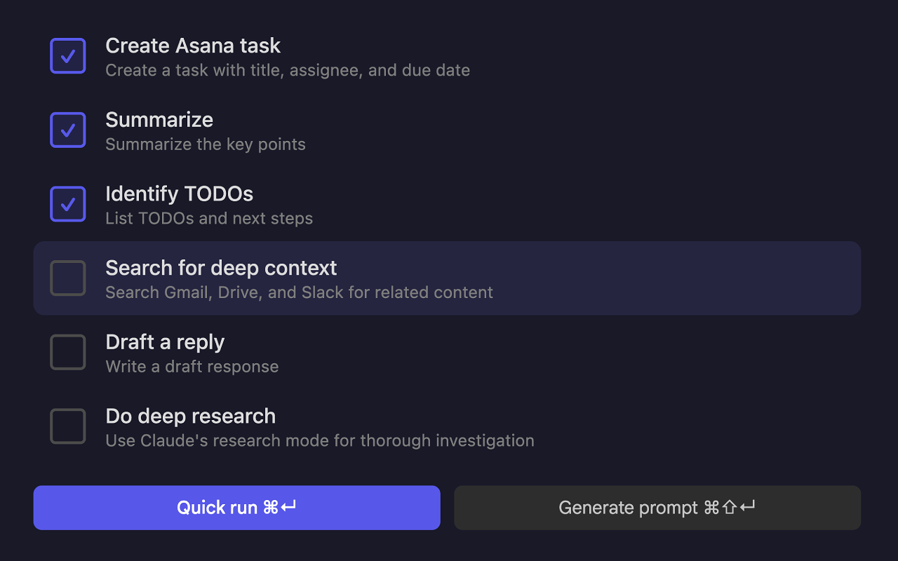

An open source Chrome extension that extracts page context, assembles a prompt, and runs it in Claude.
Precog extracts structured context from the page you're on and assembles a Claude prompt from modular instruction blocks.
Press Cmd+Shift+P (Mac) or Ctrl+Shift+P (Windows/Linux) on any webpage to open a command palette. Precog reads the current page and presents a set of instruction blocks: summarize, identify TODOs, draft a reply, create an Asana task, search for related context across Gmail and Slack, or do deep research. Blocks can be combined. Precog assembles the page context and selected instructions into a prompt and sends it to Claude.

Open Precog on a Gmail thread and select the following blocks:
Precog has specific integrations for Gmail, Asana, and Slack. On Gmail it reads the full thread with subjects, senders, and dates. On Asana it pulls the task title and description with formatting and links preserved. On Slack it gets the message text, sender, channel, timestamp, and permalink—you can trigger it from the context menu or the keyboard shortcut.
On any other page, Precog captures the page title, URL, and any selected text. If nothing is selected, it captures the page content up to a configurable character limit.
chrome://extensions and turn on Developer modesrc/ folderFor best results, enable connectors in Claude for Gmail, Google Drive, Slack, Asana, and any other services relevant to the context being processed. This allows Claude to search across those platforms when using the "search for deep context" block.
The keyboard shortcut is configurable at chrome://extensions/shortcuts.
Right-click the extension icon and choose Options to configure email thread scope, max length for auto-generated Asana task titles, page content character limit for generic pages, and template text for each prompt block.
Precog runs entirely in the browser. There is no server, no analytics, and no tracking. Data is only sent to Claude when a prompt is explicitly submitted. Settings are stored in Chrome's sync storage. See the privacy policy.
Precog is open source under the Apache 2.0 license. Source code and issue tracker are on GitHub.
Built by Joe Mornin.